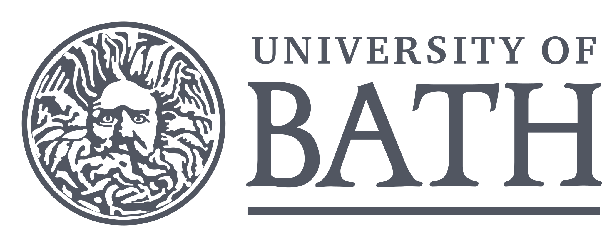
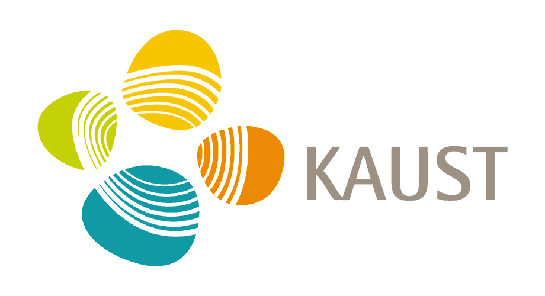
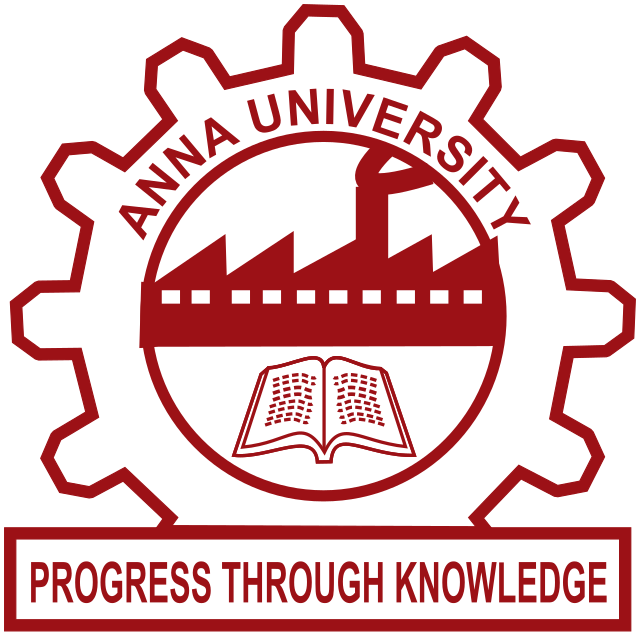

Experience
Research and industry experience
-
2023 - Present
EPFL
PhD Researcher in Energy Systems. Modeling data centers as prosumers in district energy systems and developing energy-hub optimization models that combine ORC, heat pumps, and thermal energy storage.
-
Visiting student

University of Bath
Worked on particulate matter measurements from non-combustion emissions from electric vehicles.
-
Research internship
University of Tokyo
Modeled sustainable energy pathways and applied optimization to low-carbon transport scenarios.
-
Research internship
IIT Madras
Simulated clean mobility technologies and supported policy-oriented energy studies.
-
In-plant training
Maruti Suzuki
Automotive systems maintenance and safety, with exposure to industry-scale engineering operations.
Publications
Selected publications
Modeling data centers as heat-active urban energy prosumers
Techno-Economic Assessment of Synthetic E-Fuels
EVs vs. E-Fuels: Pursuing Clean Mobility
Education
Education
EPFL
PhD in Energy Systems, 2023 - Present

KAUST
MS Clean Combustion, GPA 4.0/4.0, 2022 - 2023

MIT-AU
BE Automobile Engineering, GPA 9.63/10, 2017 - 2021